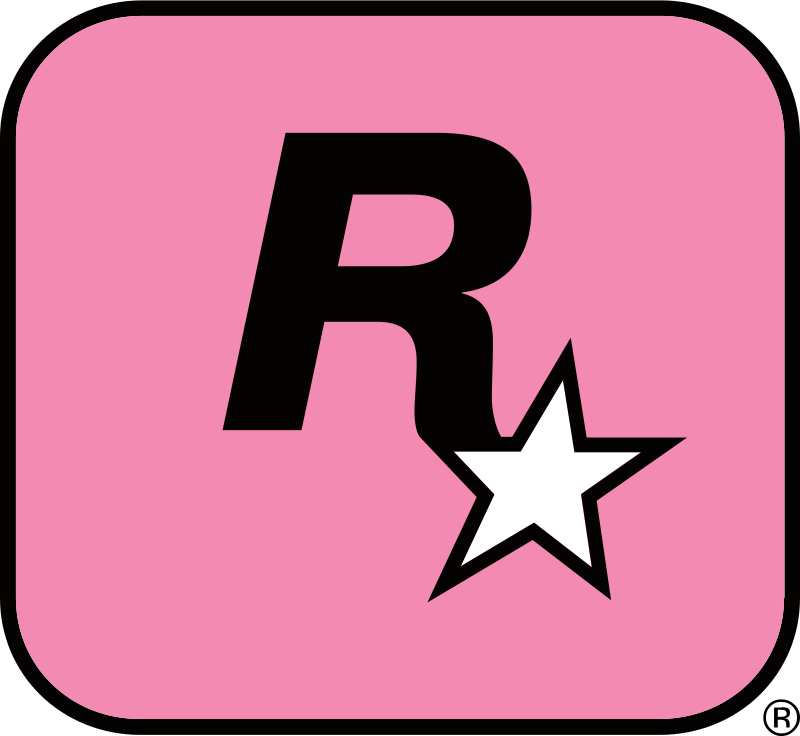

Rockstar Games, Inc. is an American video game publisher based in New
York City. The company was established in December 1998 as a
subsidiary of Take-Two Interactive, using the assets Take-Two had
previously acquired from BMG Interactive. Founding members of the
company were Terry Donovan, Gary Foreman, Dan and Sam Houser, and
Jamie King, who worked for Take-Two at the time, and of which the
Houser brothers were previously executives at BMG Interactive. Sam
Houser heads the studio as president.
Headquarters
Rockstar North
Rockstar Games, Inc. is an American video game publisher based in
New York City. The company was established in December 1998 as a
subsidiary of Take-Two Interactive, using the assets Take-Two had
previously acquired from BMG Interactive.
Rockstar India
Rockstar Interactive India LLP (trade name: Rockstar India) is an
Indian video game developer and a studio of Rockstar Games based in
Bangalore. The company was established in August 2016 and is led by
studio director Daniel Smith.
Rockstar Toronto
Rockstar Games Toronto ULC (trade name: Rockstar Toronto; formerly
Imagexcel, Alternative Reality Technologies, and Rockstar Canada) is
a Canadian video game developer and a studio of Rockstar Games based
in Oakville, Ontario.

Rockstar London
Rockstar London Limited is a British video game developer and a
studio of Rockstar Games based in London. Mark Washbrook established
the company in November 2005 within Rockstar Games' European
publishing offices. The studio's first game was Manhunt 2, which it
took over from Rockstar Vienna after that studio was shut down in
May 2006.